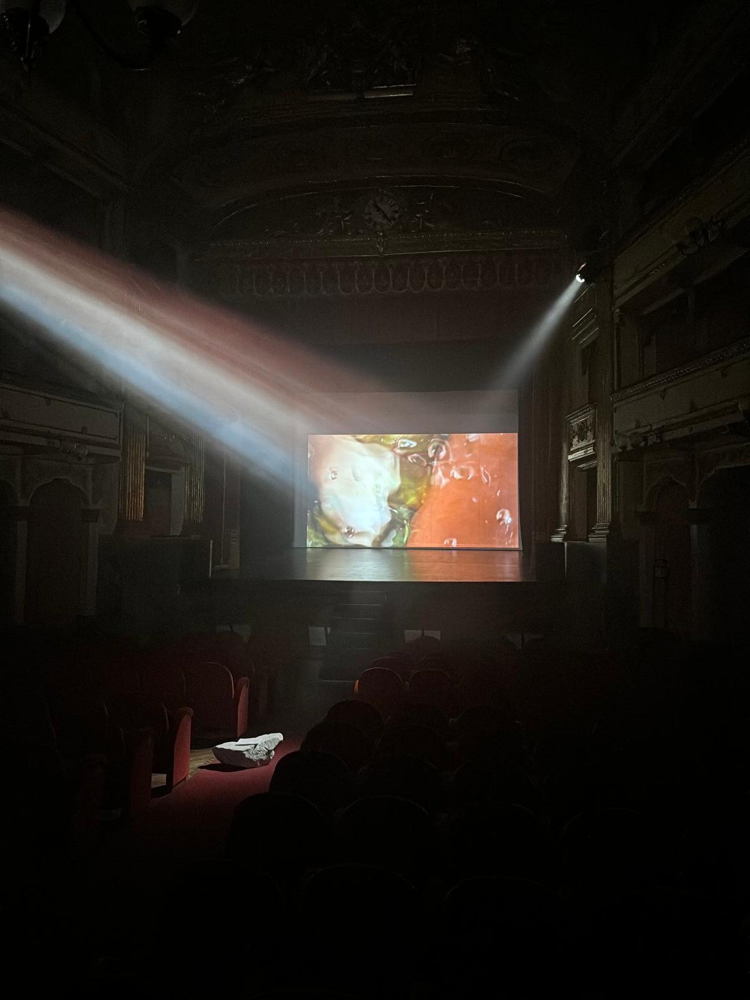
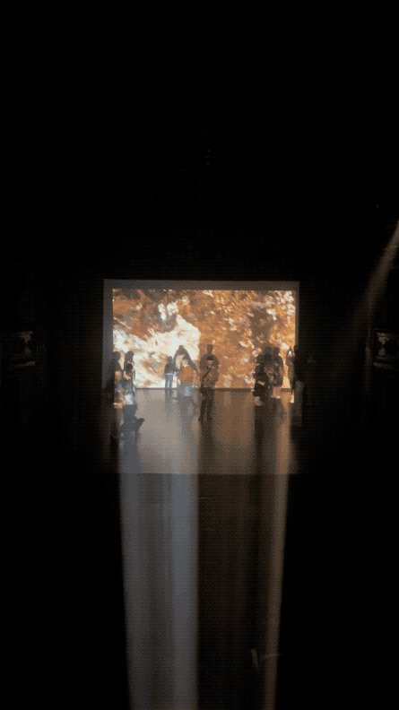
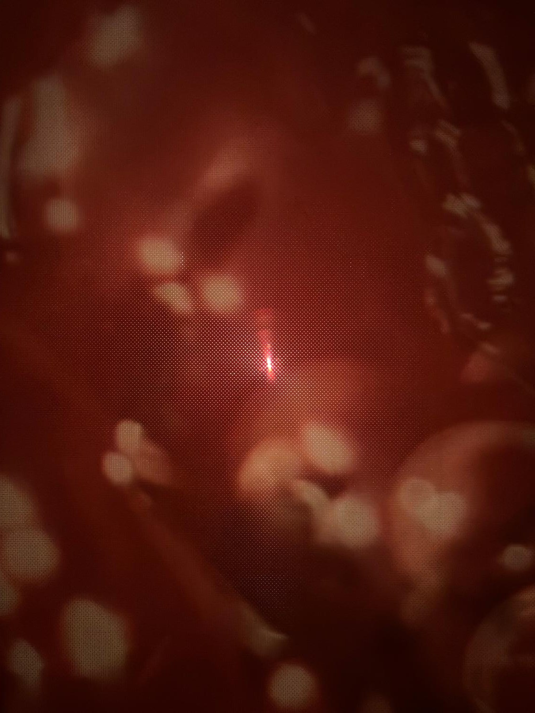
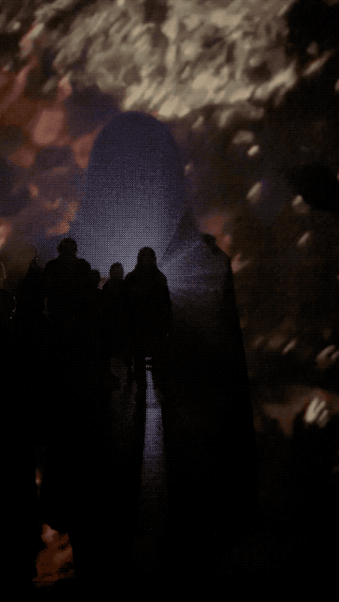
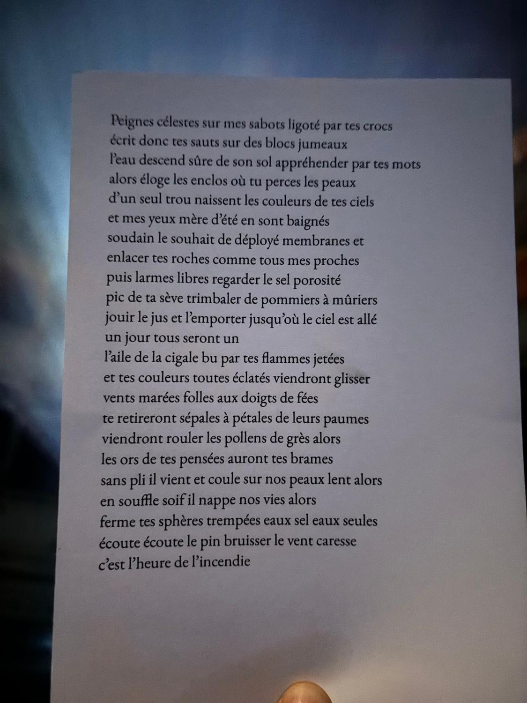
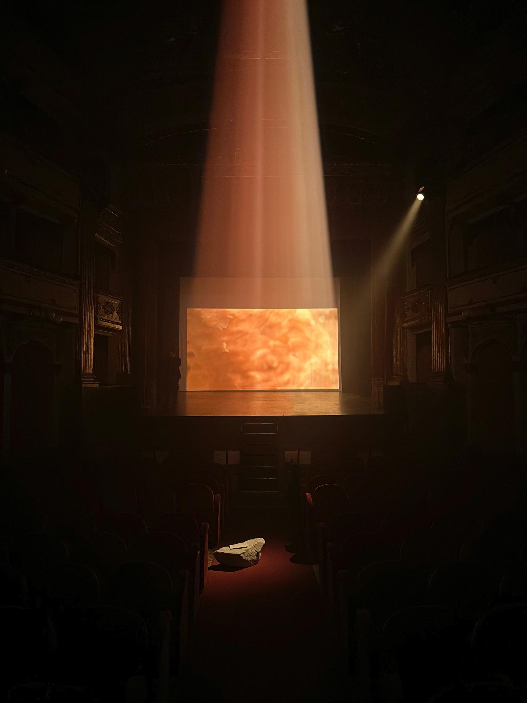
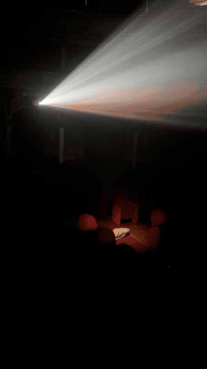
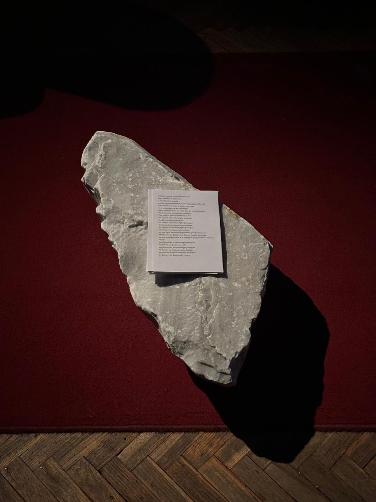
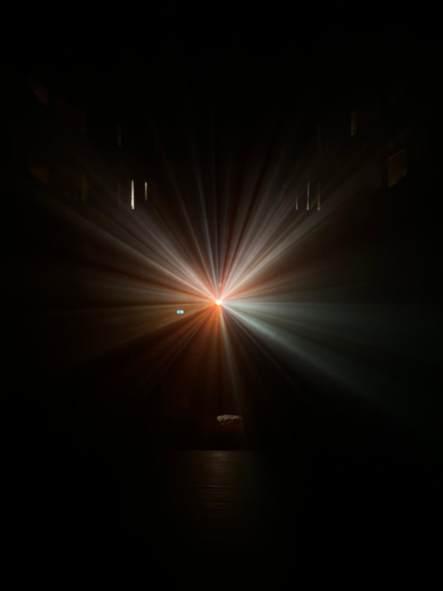
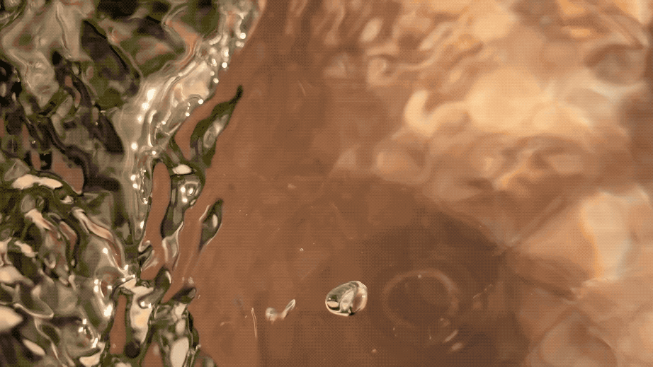

Regarde regarde l’eau qui boit tout
Installation vidéo et sonore, lecture performée2024









Regarde regarde l’eau qui boit tout
2024
Vidéo 4k 12min24sec, son, brouillard, pierre calcaire, encre sur papier, visiteurs par petit groupe, au théâtre Toselli
Commissariat : Andrea Lerda
Installation accueillie par le Théâtre Toselli à Cuneo, suite à la résidence Art.Ur
Élaborée dans le Val Gesso, les habitants sont invités à arpenter le théâtre en petit groupe, ils se retrouvent alors immergés par la lumière des torrents, lors de notre passage j’effectue la lecture en marchant d’un certain nombre de poèmes écrits lors des marches dans la vallée.
Tu souffles tes strates sur toutes les mers →